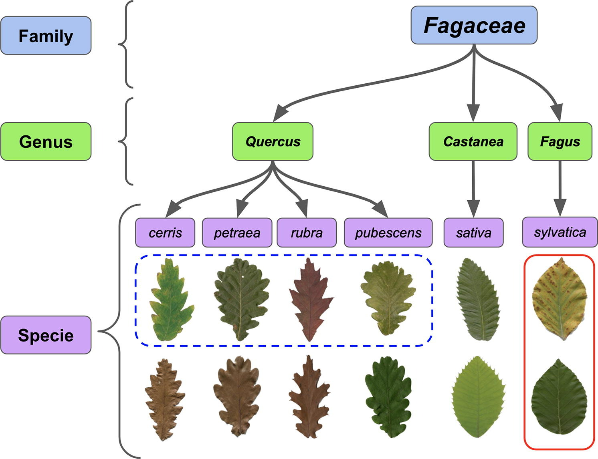
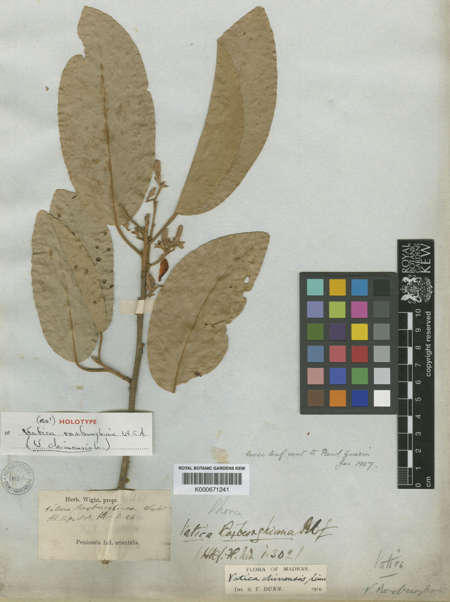

The plant kingdom is so diverse and varied, biologists and taxonomists have developed a system to help them communicate information about plants with each other.
Often, they are grouped by usage or characteristics of the plant including plant structure, growth patterns and even leaf shedding characteristics. Source

Fig.1 - Plant classification visualized.
How are plants classified?
The plant kingdom is divided into two orders: Dicotyledons and Monocotyledons. Dicotyledons are the most common order, making up two thirds of the plant kingdom, and their name comes from the fact that their seedlings have two seed leaves. Monocotyledons make up the remaining third of the plant kingdom, and their seedlings only have one seed leaf.
Families
Families are categories within each order, and family names suffix with a "aceae". Members of the same family share many similarities.
Genus
Families are further subdivided into genus, and genus names should always be captialized. Genus can be thought of as the "group" of the same plants.
Species
Species even further distinguishes plants in a genus group to be an individual. Species is written after the genus name.
Classificaton example

Fig.2 - Vatica chinensis specimen in a herbarium entry.
Family: Dipterocarpaceae are broad leaved evergreen trees, with aromatic resins. They tend to grow as emergent trees in rainforests in small clusters.
Genus: Vatica leaves are webbed, thinly elliptical
Species: Vatica chinensis is a critically endangered species of resinous hardwood tree that is harvested for its timber and occasionally its sap.